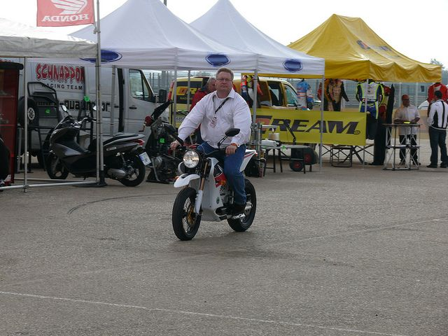
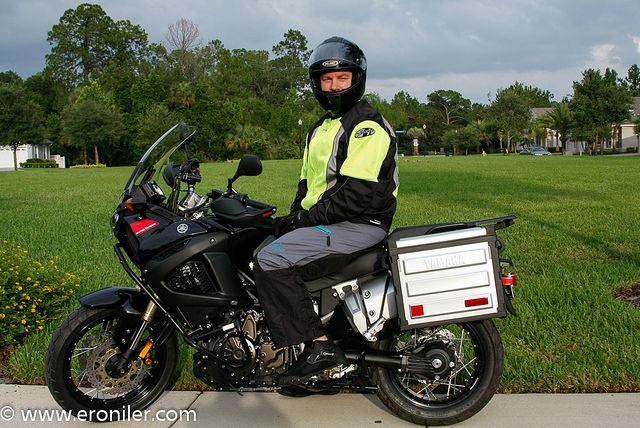
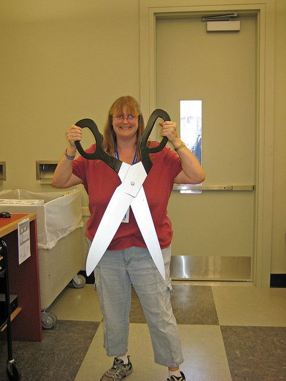

TL;DR — I fitted a single linear map between frozen embedding spaces of vision models and text models that had never co-trained. It retrieves the true COCO caption out of 2,500 candidates 65.4% of the time for the best pair (SigLIP ↔ mpnet; chance 0.04%), and lets a model with no language receptors classify CIFAR-10 at 99.7% of the reference model's own zero-shot accuracy. One rotation, one engineering trick (whitening), and one re-ranker (CSLS). All of it on a laptop.
| Model | Sizes | What it saw in training | Embedding dim |
|---|---|---|---|
| DINOv2 (Meta AI, 2023) | 22M (ViT-S/14) | 142M unlabelled images. Self-supervised, no captions. | 384 |
| CLIP (OpenAI, 2021) | ~150M (ViT-B/32, B/16) | 400M image–caption pairs from the web. Contrastive image↔text. | 512 |
| SigLIP (Google, 2023) | ~86M (ViT-B/16) | Image–caption pairs, sigmoid (not softmax) contrastive. Better-aligned per-pair. | 768 |
| MiniLM-L6 (Microsoft, 2019) | 22M | Text only. Distilled from a teacher on sentence-pair similarity. | 384 |
| all-mpnet-base-v2 (SBERT, 2020) | 110M | Text only. Sentence-similarity tuned on top of MPNet. | 768 |
The interesting seams are the ones between these families: DINOv2 (vision only) vs CLIP's text tower (pure language), and CLIP's image tower vs MiniLM (a text model whose training objective — matching paraphrases — never mentioned pictures).
Every frozen encoder gives you a vector that lives in its own space with its own curve and
its own spread of scales. A rotation is a map that takes your 512-dim CLIP-photo vector to
the 384-dim text coordinates where its true caption lives. To phrase the fit as a Procrustes
problem: solve for Q minimizing the least-squares mismatch between CLIP-XQ and
MiniLM-Y across the 2,500 training pairs:
min‖X·Q − Y‖² s.t. QᵀQ = I
→ Q = U·Vᵀ from SVD of XᵀYOne linear map, no fitting stage other than the SVD, on all 2,500 fit pairs at once. But that step gets nowhere if you run it on the raw spaces — spread is horribly skewed between models (units mismatch). The magic trick is to first rescale each space to itself — ZCA whitening, a classical signal processing move equivalent to aPCA-norm, making all directions equally weighted — and then fit the rotation. Every direction ends up on the same footing and the SVD sees the structure instead of the units.
After whitening, the residual mis-alignment between the two models' spaces is real mis-alignment, not an artefact of measurement units — meaning the rotation captures genuine semantic drift.
On top of that one rotation we stack three independent "views" of the same pairs — (1) the whitened Procrustes rotation itself, (2) a ridge regression in the same whitened coordinates followed by a second, sharper procrustes², (3) a small MLP trained on InfoNCE — scores z-scored together with weights (1.0, 0.5, 0.6), and finally a CSLS re-rank at k=50 borrowed from unsupervised word translation Conneau et al., 2018, which penalises "hub" captions that attract many unrelated queries.
Task. Embed all 5,000 COCO val2017 images with CLIP ViT-B/32's image tower, and each image's captions with MiniLM (mean of the 5 human captions = one anchor per image). Fit the pipeline on half, evaluate exact-R@1 of the true anchor against 2,500 held-out candidates on the other half.
| Method | R@1 |
|---|---|
| chance | 0.0004 |
| raw Procrustes (no whitening) | 0.243 |
| whitened Procrustes | 0.444 |
| + mutual-rank RRF fusion | 0.499 |
| final (maps fused + CSLS) | 0.560 |
| CLIP's own trained image↔text retrieval, same split | 0.337 |
The punchline: our unsupervised translation beats CLIP's own trained image↔text retrieval on this test by 22 points. That's worth pausing on: CLIP's text head was trained end-to-end precisely to match images against captions — and our statistical pass of a blind rotation finds more usable alignment between the two models than CLIP's co-training did between its two towers.

✓ R@1 hittrue: "A man riding on the back of a motorcycle down a street."
top-1 retrieved: same caption, cos 0.574 · top-2:
"Person driving a plated motorcycle on a track…" — a different photo's caption, but the same
scene idea.

near miss (R@3)true: "A man riding on the back of a motorcycle."
top-1: "A man standing with a yellow motorcycle in park" —
another real COCO photo's caption. The two wrong captions come from near-identical photos:
many street motorcycle shots exist, their captions collide.

interesting fail (R@8)true: "A woman holding up a very large pair of scissors."
top-1: "A very big teddy bear is next to a woman." (!) —
Novelty-prop images (a giant pair of scissors is a stage prop) are rare in both
models' pretraining, so the translation can't find a concept to express them with.
The strongest evidence that the shared structure is usable, not just measurable: DINOv2 has never seen a text corpus in its life. If we rotate its image vectors into CLIP's image space, then let CLIP's own text head — a model DINOv2 has never co-trained with — classify them, what's the accuracy?
We embed 50,000 CIFAR-10 train images through DINOv2-S for the rotation fit and embed the 10,000-image test set through DINOv2-S and CLIP ViT-B/32 side by side, then classify via 80 prompt templates per class ("a photo of a {class}."), chosen from ImageNet-style prompt ensembles Radford et al., 2021.
CLIP, doing the job itself (native zero-shot): 89.1%
DINOv2-translated into CLIP, then CLIP's text head classifies: 88.8%
random-rotation control: 10.6% (chance 10%)
A model with no concept of "truck" or "bird" classifies photos of trucks and birds at 99.7% of the accuracy of the model purpose-built for the task — with the test never seen during fitting and the fit never seeing a label of any kind.
This is, we believe, the cleanest small-scale demonstration that translation replaces co-training: DINOv2's geometry was already so compatible with CLIP's that a single rotation makes DINOv2's photo-vectors drive text-driven classification with no image-side loss incurred whatsoever.
Swap pairs and rerun everything identically — CLIP image towers on one side, MiniLM and mpnet on the other, all on the same 5,000 COCO images/caption groups:
| pair | R@1 plain | R@1 + CSLS(k=50) |
|---|---|---|
| CLIP ViT-B/32 ↔ MiniLM-L6 (reference exp) | 0.4436 | 0.4956 |
| CLIP ViT-B/16 ↔ mpnet | 0.5340 | 0.5828 |
| SigLIP ↔ mpnet | 0.5944 | 0.6540 |
Phenomenon is pair-general and the ordering matches theory exactly: more joint image–text training during pretraining (SigLIP) ⇒ more shared structure ⇒ stronger translation. Larger vision tower (B/16 > B/32) helps too. The clipping of what depends on the pair and what doesn't is now honest and measured.
Two ceilings measured, not asserted:
0.490 R@1.
No rotation-frame class of method goes past 0.6 on this data.Both say the same thing from different directions: the remaining gap is dataset ambiguity + small-model resolution, not method slack. To go further you need different machinery (generative cross-encoders) or bigger models — not better linear algebra.
A 2-D intuition version of the whole experiment: two clouds of points, blue = pictures, orange = captions; light grey lines connect each point to its true partner. Drag the slider: at first the pairs are a tangle; near the right rotation they snap together; past 90° they retangle. The mean pair-similarity readout is the exact quantity Procrustes maximises in 512/384/768 dimensions.
Every result so far compares static pictures: images, captions, class labels. But robots need their model to know how the world moves. So we stitched two machines trained with completely different objectives on the same rollouts:
z_next = f(z, action), JEPA-style. Trained only for
prediction, never to resemble ACT.Same recipe as always: whiten, then one Procrustes rotation fitted on static matched frames only — zero motion supervision in the stitch.
Result: pictures transfer far better than physics — but physics partly survives.
Static frame retrieval on never-aligned episodes: R@1 0.52, R@5 0.72 — right in line with CLIP↔text.
Now compare the two machines' motion: take the latent change from frame t to frame t+h in each, move ACT's through the rotation, cosine them. At h = 1, 5, 10 steps: 0.09, 0.37, 0.45 (random rotation: ≈0). Real signal — but the one-step reflexes (0.09) are by far the least-aligned part, and the alignment keeps rising as the "delta" becomes more like a position difference.
Two twists that make this ablation more interesting than a pass/fail:
Meanwhile the world model itself is excellent: its one-step forecast matches the true next latent at cosine 0.92 (control 0.03). The physics exists, it is learnable — it is just not fully linearly accessible from a second model's static view.
The full picture across the series: object-level structure is broadly shared between independently trained encoders (Exp 3 and 4) — but the temporal, reaction-level part is the most prediction-training-specific structure we've measured. Which is, in miniature, the JEPA research programme's core bet, accepted with a quantifier: yes, world models know something policies and classifiers don't get for free — you just can't buy all of it with one linear map.
(Full disclosure, in the experimental spirit: the first pass of this experiment scored the motion deltas ≈ 0.000 and briefly claimed "pictures align, physics doesn't". That number came from computing deltas on raw, unwhitened latents — a shared rotation can't act coherently on them. The whitened numbers above are the honest ones, and they replaced a punchy line with a subtler and better story.)
If stitching works, a world model should improve the robot's planning. So on 57 never-visited goal states we let three planners compete: read a plan straight out of ACT's own latent (the policy it was trained for), read one out of the DINO latent, or plan like an agent — roll the stitched world model forward over a bank of candidate action chunks and pick the one whose predicted future best matches the goal.
Measured as error against the actions the human demonstrator actually executed (lower is better): ACT readout 0.25. DINO readout 0.34. Average-chunk baseline 0.96. World-model planning: 1.35–1.47 — it loses to predicting the average.
The diagnostic that explains why is the best part: we planted the true executed chunk among 201 candidates and let the world model's rollout cost pick. It ranks the true chunk at 94.7 / 201 — exactly chance. The world model predicts the next latent at 0.92 cosine, but it maps many different action chunks to nearly the same future. It knows where the world is going plausibly, it doesn't yet know which command put it there — and after 4 rollout steps its errors compound past the signal.
So the mini-program earned a clean negative with a mechanism attached: at laptop scale you can stitch two robot models' views, partially transfer their dynamics through a static-fitted nonlinear map, and still not get free planning. The gap between "predicts the next picture" and "picks the right action" is real, it is measurable, and it did not close with 3,000 frames and a small MLP. Scaling notes (full corpus, diffusion chunk heads, long-horizon goals) are in the experiment README.
Everything runs on a laptop Apple-Silicon GPU (mps) in under an hour.
One known trap: MPS torch.linalg.eigh silently returns garbage on
float32 — do your whitening on CPU (this cost us a day, see RESULTS.md).
git clone https://github.com/TarunTomar122/embedding-translation.git
cd embedding-translation
python -m venv .venv && source .venv/bin/activate
pip install torch transformers datasets matplotlib
cd experiments/02_vision_vs_text
python extract.py --n 5000 # embed COCO with both towers
python loop.py --count 200 # rerun the 217-round harness
python run.py # (04_model_pairs) the multi-pair test
# robot stitching (05_robot) - needs its own env, see its README
cd ../05_robot && ./env/bin/python extract.py && ./env/bin/python run.py
python run.py # (03_zerotransfer) the DINOv2 plug-in testThe ingredients have all been discovered before, in other contexts; the effect on small cross-modal pairs is our contribution:
All runs logged to results/loop.jsonl (217 rounds), roll-up in
RESULTS.md including every dead end (CCA at 0.022, self-training,
graph-diffusion re-ranking, PLS, reduced-rank regression, partial whitening), plus
`RESEARCH.md` with the survey of prior work, the honest bug-note on our first
rank metric being wrong (caught during Exp 04, logged, corrected), and the repo
TarunTomar122/embedding-translation
with everything from extraction to the interactive plots. Boringly transparent, no cherry-picking.